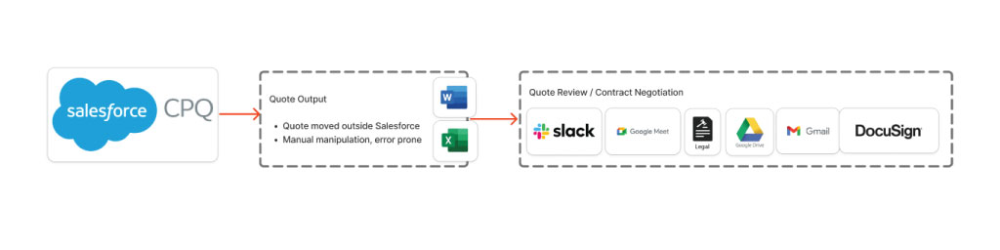
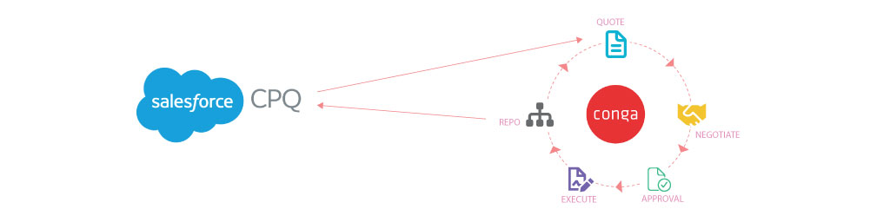
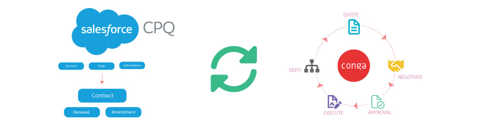

Sales Operations, Workflow Design
Salesforce CPQ Workflow Evolution
How an inherited Salesforce CPQ implementation was stabilized, streamlined, and expanded into a reliable quoting and contracting workflow. This was not a full re-implementation, but a systematic refinement of quoting, contract, and renewal processes to reduce manual effort, improve accuracy, and support scalable sales operations.
Role
Salesforce CPQ Maintenance & Workflow Lead
Timeline
Ongoing
Platform
Salesforce CPQ, Salesforce Contracts, Conga
Deliverables
Workflow Mapping, Template Optimization, Integrations, Training
The Background
The organization had launched Salesforce CPQ through an external team, but as the business evolved, gaps began to appear. Multi-year term rules varied, approvals were handled manually, and renewal workflows weren’t automated.
Sales reps relied heavily on Slack messages, emails, and workarounds to get quotes approved and contracts prepared, which introduced delays and inconsistencies.
The Challenge
CPQ was technically live, but not operationally optimized. Key Issues included:
- Inconsistent multi-year pricing and discount structures
- Approval flows managed manually through Slack, email, or spreadsheets
- Renewals that weren't automatically generated, required Sales Ops cleanup
- No formal contact generation tool, leading to inconsistent documents
- Limited workflow visibility, making it difficult to track where deals stalled

Teams spent unnecessary time reconciling data and clarifying steps instead of moving deals forward.
My Approach
01 - Diagnose & Map the Existing Workflow
I documented the full quote-to-contract process, including all rep touchpoints, approvals, handoffs, and renewal triggers.
This surfaced misaligned logic, unclear ownership, and places where configuration didn’t support real workflows.
02 - Standardizing Quoting & Term Logic
I stabilized CPQ by:
- Standardized multi-year pricing rules
- Aligned bundle components with Finance expectations
- Added guardrails to prevent invalid configurations
- Giving reps a predictable, repeatable quoting sequence
These improvements reduced the number of exceptions and approval escalations.
03 - Introducing Structured Approvals & Contract Generation
To eliminate the manual approval and contract creation gaps:
- I designed and documented the approval routing logic (discount, product, term–based)
- I partnered with a third-party integrator who performed the Conga Contracts development
- I provided functional requirements, field mappings, and workflow diagrams
- I validated the templates and ensured they aligned with CPQ pricing and product logic
This introduced predictable approval paths and consistent contract output.

04 - Automating Renewals
I worked across Sales Ops and Rev Ops to ensure:
- Automatic renewal opportunities were created
- Terms and quantities rolled over accurately
- Amendments followed a consistent path
- Reps no longer had to manually create or correct renewal data
This increased renewal predictability and reduced Ops overhead.

The Impact
- More accurate, consistent quotes across all reps
- Reduced manual approvals and faster deal turnaround
- Standardized contract generation, reducing Legal feedback loops
- Predictable renewals driven by automation, not manual entry
- A workflow foundation that future teams can continue to scale
This was not a ground-up rebuild, it was a targeted, thoughtful evolution that brought structure to a system the business had already invested in, improving reliability without slowing delivery.